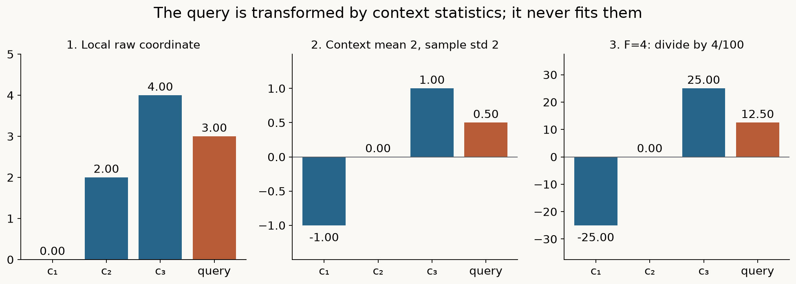
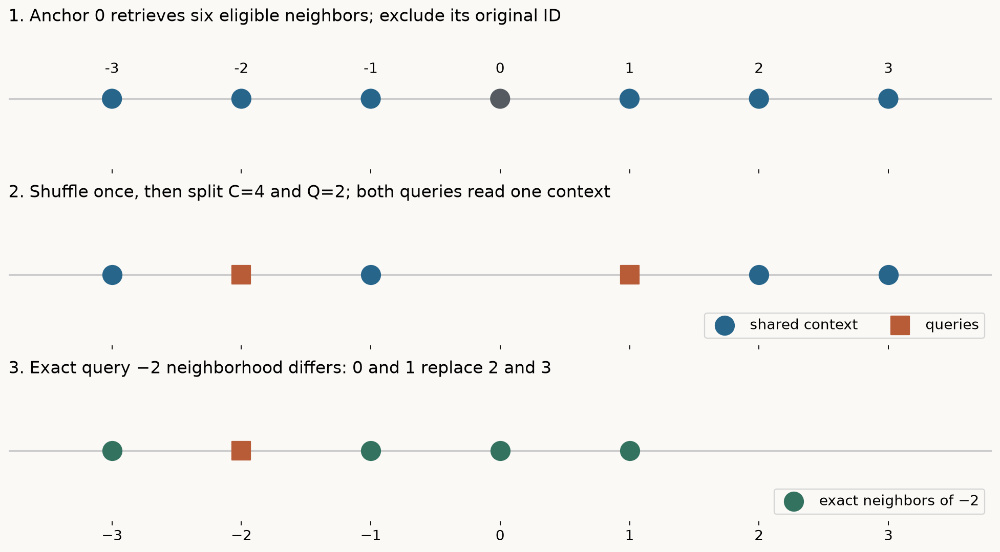
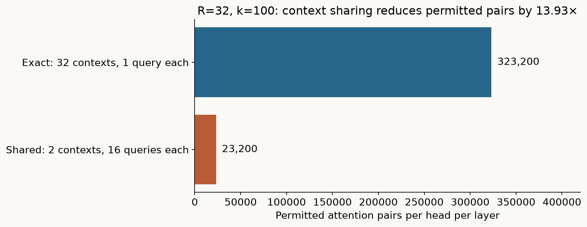
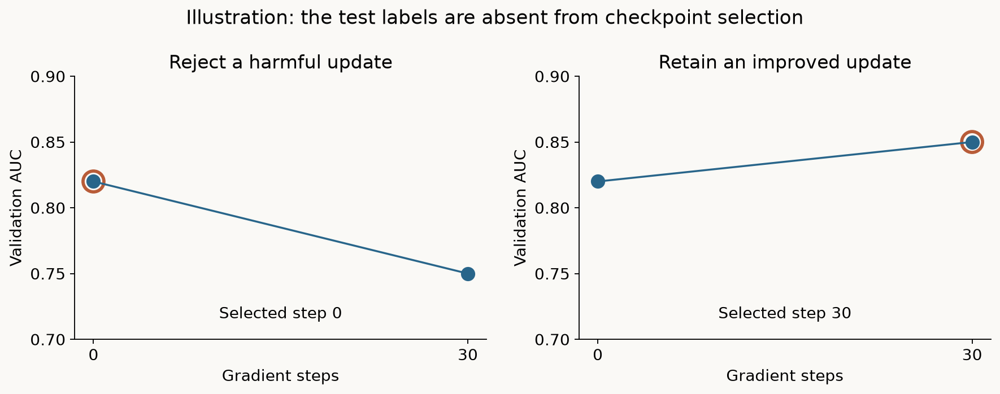
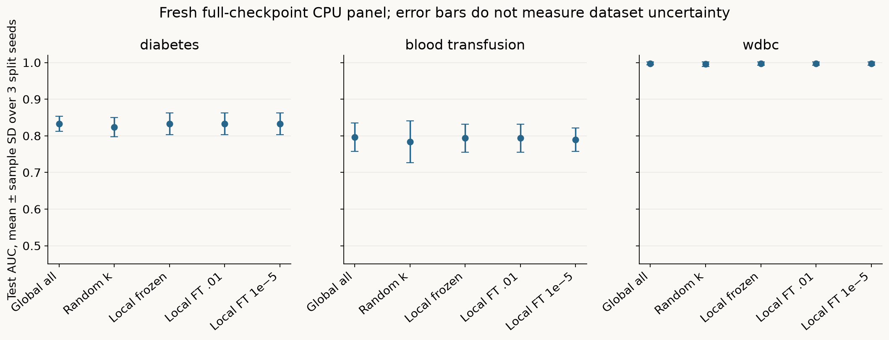
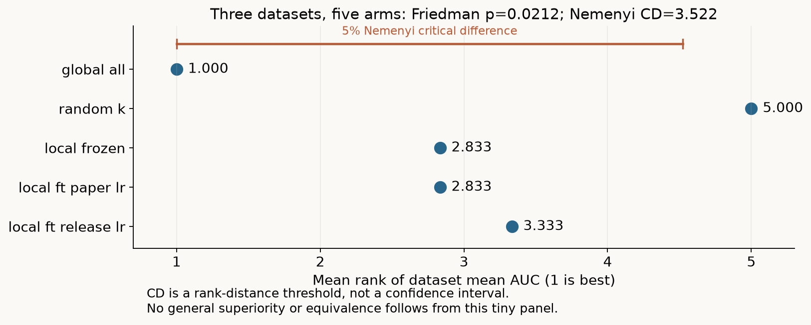

Year 2 · Quarter 3 · Lesson 067
LoCalPFN: retrieve a context, then adapt the inference rule
Retrieve before reading
The argument of this lesson
Localize the evidence before adapting the inference rule
TabICL reorganized computation inside the pretrained model. LoCalPFN changes what surrounds it: retrieve a query-specific context, normalize that local problem, then run a complete PFN. Optional fine-tuning changes the weights as well. Keeping those interventions separate connects this lesson back to TabR while avoiding the false impression that all retrieval models use the same geometry.
The skill: distinguish a better context from a better inference rule¶
In plain terms. Two very different changes can make a model's answers better. You can feed it better examples, or you can change the rule it uses to read those examples. This whole lesson keeps those two apart.
An in-context predictor receives labeled rows and predicts the label of another row. Its parameters may remain fixed. Yet its answer changes when you change those examples. Fine-tuning is the other lever: it changes the parameters themselves. By the end of this lesson you should be able to implement both interventions, identify exactly where labels enter, and explain why a faster training episode approximates a different neighborhood from the one used at inference.
This distinction matters for our relational mission. A neighborhood retrieved from a customer table, an event history or a graph is an information policy. The neural network consuming that neighborhood is a separate learned rule. If a system improves, we need to know whether the useful change was eligible information, its representation, the learned rule, or the evaluation boundary. “We added retrieval” is too coarse an explanation.
The source to read. The central source is Thomas et al., Retrieval & Fine-Tuning for In-Context Tabular Models, final NeurIPS 2024 paper. Read Sections 2.1–2.4, 4 and Appendix A.2/A.5. The final paper adds a runtime study; its Table 9 corresponds to Table 8 in the earlier arXiv version. The official implementation is pinned independently.
Scope check. This is the original whole-row TabPFN v1 backbone. The feature-token v2 model from Lesson 064 and the TabICL model from Lesson 066 are different models and do not silently replace it.
Retrieve before reading¶
Answer these from memory, in writing, before reading on.
- Without looking back, explain why a query label must be withheld even when its feature vector is present.
- Then distinguish a train-fitted normalizer from one fitted on the current query batch.
- Finally, predict whether changing the training examples can alter a frozen model's output.
These are the ingredients we now combine; an answer about “no gradients” alone does not establish no leakage.
Why a local context can make a frozen model more expressive¶
In plain terms. A frozen model has exactly one fixed rule. But if you hand each query a different set of nearby examples, the composed system behaves differently in different regions — even though no weight ever changes.
The notation, one symbol at a time. Write the training memory as D = {(xᵢ, yᵢ)} for i = 1,…,N. A feature vector xᵢ has F columns. yᵢ is an integer in {0,…,K−1}. A context C is the subset of these labeled examples supplied to the model. The pretrained function fθ receives C and the query features q and returns K real-valued scores, called logits. Softmax converts them into probabilities:
p(y=c | q,C) = exp(fθ(q,C)ᶜ) / Σⱼ exp(fθ(q,C)ʲ).
θ names all neural weights. In-context prediction holds θ fixed.
Scope check. The name “locally calibrated PFN” describes this adaptation method; it is not a guarantee of probability calibration, and the paper’s AUC benchmark is not a calibration-curve evaluation.
Global versus local context. The global strategy uses the same C for every q. The local strategy sets C(q) to q's k nearest eligible memory rows. Even with the same θ, the composed mapping q → C(q) → fθ(q,C(q)) is a different predictor. As q crosses a neighborhood boundary, the rows entering the computation can change. This can represent local variation that a single shared context fails to use.
It is not a nearest-neighbor vote. The transformer still processes every retrieved row jointly and learns how their features and labels inform q.
Two experiments that ask different questions¶
The concentric-circle experiment in paper Figure 1 holds the training count at 1,000 and increases the number of class-alternating rings. It asks about target complexity at fixed size. The three real-data curves in Figure 2 vary memory size and context length; they ask whether a fixed context budget can use more candidate data. These are different interventions. More memory may improve the candidate neighborhood even when k stays fixed.
Scope check. Neither experiment proves that distance is a good similarity measure for every table.
Two limiting cases worth knowing¶
There is an instructive limit. If k=N, local retrieval returns every training row. Given identical preprocessing, class axes and weights, reordering that full context leaves the row-permutation-invariant model's answer unchanged, apart from floating-point effects. This is a useful implementation CHECK. At the other extreme, a small k can omit distant but informative cases or entire classes. The paper's Figure 9 shows train/test loss gaps consistent with increased overfitting for some small neighborhoods.
Scope check. Locality changes the bias and variance of the whole system; it is not a monotonic performance guarantee.
Two normalizations, two jobs¶
Local context is useful only relative to a distance rule. The global training-fitted scale defines who is close; the second, local scale defines what the pretrained PFN receives. Swapping these roles changes the whole composed predictor.
In plain terms. The system standardizes the numbers twice, for two unrelated reasons. The first standardization decides who counts as nearby. The second one reshapes the chosen neighborhood into the exact form the pretrained network was trained to expect.
Normalization one: define the distance for retrieval¶
The official numeric data path first fits StandardScaler on the outer training split, using a population standard deviation, then clips transformed coordinates to [−10,10]. That representation defines Euclidean retrieval. Validation and test rows are transformed using the same stored training mean and scale.
Scope check. For numeric-only datasets, the paper's one-hot option leaves the representation unchanged. The measured lab excludes categorical datasets; it therefore does not test the claimed gain from one-hot encoding.
What the distance is, and is not. Squared Euclidean distance is d²(q,xᵢ) = Σⱼ(qⱼ−xᵢⱼ)² in those transformed coordinates. A feature measured in thousands can dominate one measured in fractions before scaling. Standardization removes that unit choice. But it does not discover relevance. Ten irrelevant standardized columns still contribute ten noise terms. One-hot categories also create a specific geometry: standardized rare categories can contribute large distances.
Scope check. A learned metric would require another training objective and another leakage audit; the paper's default uses fixed features.
Normalization two: match the pretrained input contract¶
Once a neighborhood has been retrieved, the model normalizes again, this time using only that local context. The actual source first pads to 100 coordinates and forms a contiguous sequence-first tensor. The following equations describe the active feature coordinates; the exact reduction layout is discussed immediately below.
The formula, per feature. For each feature, μ is the mean of its C context values. s² = Σᵢ(xᵢ−μ)²/(C−1) is the sample variance. Every context and query value becomes clip((x−μ)/(s+10⁻⁶),−100,100). Then divide by F/100, which is multiplication by 100/F in exact arithmetic. The other coordinates were zero-padded before normalization.
Scope check. This scaling is part of the released pretrained input contract. This second operation makes the PFN see a context-relative problem; it is distinct from deciding who is near the query.
Worked example. Take a one-feature illustration. Context values [0,2,4] have mean 2 and sample standard deviation 2. A query value 3 becomes approximately 0.5. If the active model input has F=4 features, that active coordinate is scaled to approximately 12.5. The earlier zero padding does not change this illustrative coordinate’s arithmetic. The order matters: normalization followed by scaling differs from scaling followed by normalization, because the latter largely cancels the scale factor.

A measured floating-point subtlety¶
In exact arithmetic, a constant local feature has s=0 and centered value zero. Floating-point reductions need more care. The released source pads first, forms a contiguous T × B × 100 tensor and uses explicit masked sum/count reductions.
Worked example. A real diabetes context with a constant feature exposed cancellation: in a recorded float32 fixture, the official transformed value was about 2.399 while an algebraically equivalent mean/std shortcut gave zero. The independent precision diagnostic shows that float64 removes this discrepancy on that fixture. Our implementation preserves the source layout and operation order, including division by F/100.
Scope check. This source match is not an endorsement of amplified rounding, and 2.399 is a fixture-specific value, not a rule for constants. The stabilizer and clamp keep the finite numeric path bounded. In this numeric subset, inputs are finite; missing-value handling is outside the experiment. Query values never fit either set of statistics. Float32 reduction layout can nevertheless affect rounding, so inference microbatch size remains part of the saved runtime contract; mathematical query isolation is not a promise of bitwise equality across every batching layout. Do not substitute the historical v1 classifier's power transformations, constant-column removal or logarithmic outlier compression.
Scope check. LoCalPFN's released
ftknn.pycallsPFN.forwardwith normalization enabled and outlier clipping disabled. Its probability path uses softmax at temperature 1; theinf_temperature=0.8configuration field is not used in these local evaluation functions.
Model architecture: the complete pretrained model inside retrieval¶
The two transforms specify the retrieval and input contracts. Now trace the complete composition: legal memory, nearest records, local normalization, all pretrained layers and the class head. Retrieval chooses evidence; the PFN still performs the conditional inference.
See the whole solution
LoCalPFN: retrieval wraps a complete pretrained network
Trace before reading: Does changing the neighbor set require changing the PFN weights?
Read every component and connection as text
- Query x: transform with saved scaler; do not provide its target. Connects to Exact nearest k records.
- Memory X, y, IDs: transform with same scaler; exclude query ID during fitting. Connects to Exact nearest k records.
- Exact nearest k records: distance in fixed scaled space; C(x) contains features + labels. Connects to Local normalization.
- Local normalization: local context mean / sample SD; pad to100; feature-count scaling. Connects to Full historical v1 PFN.
- Full historical v1 PFN: row tokens → 12 blocks → head; softmax → query probability. Connects to Validation-only selection (fitting/selection control).
- Optional fine-tuning: shared-anchor neighborhoods; query loss updates PFN θ. Connects to Full historical v1 PFN (fitting/selection control).
- Validation-only selection: choose tuning checkpoint; then frozen exact test retrieval.
↔ On narrow screens, scroll horizontally to see all branches. The text route above reflows to your screen.
Pictured scope. Historical v1 model: 12 blocks, d=512. Fixed standardized Euclidean retrieval; this is not TabR’s learned key/value correction. Local normalization follows the retrieved context.
{kind=link}
In plain terms. Retrieval does not use a shrunken toy network. It wraps the entire pretrained TabPFN v1 model from Lesson 062, with every original weight loaded.
The checkpoint contains 12 transformer blocks, width 512, four attention heads of width 128, a feed-forward width of 1,024, and a 10-logit output head. The visible implementation loads every model tensor from the original checkpoint, including the feature encoder, scalar label encoder, all repeated blocks and decoder.
Scope check. It is the same full architecture introduced in Lesson 062, with a wrapper matching the LoCalPFN local path. No reduced PFN or new randomly initialized miniature supplies the measurements.
From rows to tokens¶
For a batch of B independent contexts, input features have shape B × (C+Q) × F and known context labels have shape B × C. After local normalization and padding, the feature encoder maps 100 → 512. A separate affine map sends each scalar context label to 512 coordinates, and this embedding is added to the corresponding context row. Query rows receive their own feature embedding but no label embedding.
Scope check. Integer label encoding here is the historical architecture; it should not be confused with a numeric regression target.
Inside one block¶
Each block projects the row states into queries, keys and values. All rows provide attention queries, but only context rows supply keys and values. For one head, A = softmax(QKᵀ/√128), followed by AV. The matrix has C+Q receiving rows and C sending columns. A context row can read any context row, including itself. A query reads context only; it cannot read another query or itself through the key/value path. Its own features still travel through the query projection and residual stream. Masking keys does not erase the query.
The block applies LayerNorm(h + attention(h)), then a 512 → 1,024 → 512 GELU feed-forward transformation inside a second residual addition and LayerNorm. These are post-addition normalizations. Repeat this complete block 12 times. The decoder maps each resulting query row through 512 → 1,024 → 10, with GELU between the linear layers. Slice the first K logits for the class universe defined by the outer training labels, then apply softmax.
Why the class axis is fixed from training, not from the batch¶
That last clause prevents an easy bug. If a retrieved context contains only class 0, K is still 2 for a binary task. The pretrained network can produce two logits and need not be replaced with a constant predictor. If a held-out batch happens to contain one target class, its unseen labels must not resize the model's output axis. The official eval_ft_knn derives its class count from evaluation targets; our version deliberately fixes the axis from outer training data. The model's forward signature never accepts query labels. The checker changes dummy query labels in the official call to verify they do not influence its logits.
Scope check. Original synthetic prior fitting produced the starting weights and is not repeated here. Frozen local inference updates no weights. Fine-tuning starts from a fresh copy of those weights for each dataset, split and learning-rate arm; the same complete model remains trainable. A changed weight checksum shows that optimization happened, not that its selected test prediction improved.
Exact inference and approximate training are different batch layouts¶
Per-query neighborhoods describe the desired prediction rule. Training can share an anchor neighborhood across several queries to reduce cost, but that is an approximation with a different batch layout. Compare what is reused before comparing runtimes.
In plain terms. At prediction time, each query deserves its own neighborhood. Training that literally would be expensive, so the paper uses a cheaper layout that shares one neighborhood among several queries. The two layouts are not the same computation.
The two layouts, named. At deployment, each query has its own k-neighbor context. If we predict R held-out rows at once, the conceptual layout is B=R, C=k, Q=1. Sharing a batch dimension does not mean sharing a context. In contrast, a global context uses B=1, C=k and Q=R. It computes the context representation once for all R queries.
The training approximation. This distinction explains the paper's training approximation. With R supervised queries, exact local training would repeat the context computation R times. Instead, choose B anchors from training memory. Around each anchor, retrieve C+Q nearby rows; exclude that anchor by original row identity. Shuffle the retrieved rows and split them into C context rows and Q supervised query rows. One forward pass now trains B×Q queries while representing only B contexts.

Worked example. Consider a one-dimensional memory with anchor 0 and nearby eligible points −3, −2, −1, 1, 2 and 3. A possible random split puts [−3,−1,2,3] in context and [−2,1] in queries. These queries share a local vicinity, but the context is not the exact four-neighbor set of either query. The point at 3 is farther from −2 than the withheld query at 1. The approximation is neighborhood sharing, even if the search around the anchor was an exact Euclidean search.
Scope check. Replacing the search engine with approximate FAISS indexing would address a different cost.
Why exclusion must use row identity¶
Exclusion must use row identity. Two distinct customers can have identical feature values. Removing every distance-zero row would remove both; removing the first sorted neighbor can leave the anchor under ties. Our stable tie policy preserves candidate row order and masks the matching original ID. Context and query IDs are disjoint within each episode. Episodes may overlap each other because every one is drawn from the authorized outer training pool. Such overlap is ordinary minibatch reuse, not test leakage.
Scope check. There is a paper/source discrepancy worth preserving rather than hiding: final paper footnote 2 explicitly excludes the anchor, while the released
train_ft_knnretains it in the search result before shuffling. Retaining one anchor does not itself put the same row into both context and query, but it changes the sampling distribution. The active lab follows the paper's exclusion rule and records every anchor and episode. Copied-input source checks compare the same constructed episodes; they do not certify equality of those two samplers.
How much computation does sharing save?¶
In plain terms. Sharing one neighborhood among several queries cuts the number of attention comparisons. Here is the arithmetic — but it is a count of permitted pairs, not a stopwatch.
Counting attention pairs. Ignoring heads and layers, exact local prediction for R queries has R·k(k+1) permitted query-key pairs. B shared training contexts with Q=R/B queries have B·k(k+Q) = Bk²+Rk scores.
Worked example. For R=32, k=100 and B=2, exact contexts require 323,200 scores per head per layer, while sharing requires 23,200: approximately 13.9 times fewer permitted pairs. Multiply both by four heads and 12 layers for this backbone.
Scope check. This is an arithmetic comparison of permitted attention pairs and of our explicit rectangular implementation, not a measured wall-clock speedup. The released PFN calls a square TransformerEncoderLayer with a boolean mask; its backend may also represent masked query-key positions. The count therefore does not claim an identical materialized score tensor or FLOP count for that source path.

The other costs. The feed-forward networks and projections also do work on every row. Exact training transforms R(k+1) rows, while shared training transforms Bk+R. Retrieval itself costs roughly R·N·F for a brute-force search over N memory rows; the local reference uses an exact FAISS index, and the lab uses vectorized exact distances with deterministic ties. CPU inference microbatches of four bound memory without changing each query's neighborhood.
Scope check. The actual paper uses inference batches of 512 and different hardware.
Training cost is not inference latency. The final paper's Section 4.5 separates training cost from inference latency. LoCalPFN and frozen TabPFN-kNN have the same inference architecture; adaptation adds training work. Its reported inference times are slower than trees even where total fit-plus-evaluate time is competitive. This distinction matters for millions of production queries.
Scope check. Our CPU timing cannot reproduce the RTX 6000 Ada runtime table or establish throughput for a production workload.
Fine-tune the query loss, then select using validation only¶
Retrieval can change predictions with fixed weights. Fine-tuning adds a second adaptation route through query loss and gradient updates. Validation selects its checkpoint; test must evaluate the frozen combination of retrieval and adapted weights.
In plain terms. Fine-tuning trains on the query labels only, never the context labels. Then a separate validation set — not the test set — picks which training step to keep, and “keep the frozen model” is always allowed to win.
The loss¶
For episode b and query j, let pᵦⱼ be the probability assigned to its known training target. The objective is L(θ) = −Σᵦⱼ log pᵦⱼ /(B·Q). The context labels influence the forward pass, while the query labels appear only in this loss. There is no auxiliary loss on the context rows. A cross-entropy helper must slice the global K-class axis and average across both batch and query dimensions; averaging only the final query or flattening the class axis into the batch changes the objective.
Worked example. For a numerical loss trace, suppose two query targets receive probabilities 0.8 and 0.25. Their negative log probabilities are approximately 0.2231 and 1.3863, so the mean query loss is 0.8047. An overconfident mistake can dominate this mean even when most classifications are right.
The gradient. For logits followed by softmax and cross entropy, the per-query logit gradient is p−one_hot(y), divided by the number of queries when forming the mean. That signal flows through the query head and the context-dependent transformer computation; there is no gradient through the discrete neighbor IDs.
Scope check. “End-to-end” adaptation here means updating the whole PFN on retrieved-context episodes; the default Euclidean retriever remains fixed. Joint retrieval and fine-tuning does not imply a differentiable neighbor selector.
The optimizer, and a documented rate discrepancy¶
AdamW maintains first and second moving averages of each gradient. After bias correction it takes a learning-rate-scaled step divided by the square root of the second moment plus an epsilon, and separately decays the parameter by a factor 1−learning_rate·weight_decay. All pretrained weights are eligible for updates. The paper specifies learning rate 0.01, weight decay 0.01, no warmup and no scheduler. Section 4.1 says the learning rate was tuned manually across tasks, rather than selected separately for each dataset. The released CLI defaults to 10⁻⁵, a 1,000-fold difference.
Scope check. We preserve both authorities with two predeclared diagnostic arms. Both see the same initial weights and exact sequence of training episodes. The primary paper-rate arm uses 0.01; the separately named released-CLI arm uses 10⁻⁵. Neither rate is selected by looking at test results. Comparing them locally can expose sensitivity to the changed CPU episode budget; it cannot reconstruct the authors' undocumented global tuning history.
Selecting a state with validation only¶
Validation AUC selects a state before test scoring. AUC is the fraction of positive-negative pairs ranked in the correct order, with half credit for ties. Step 0 must be a candidate: when later adaptation harms validation ranking, retaining the frozen state is a valid result. Our strict earliest-maximum rule retains the earlier state on ties. We evaluate step 0 and step 30, then score only the selected state on the test set.
Scope check. This is two-candidate selection, not a reproduction of a long early-stopping trajectory. Parameter change at the final step can be nonzero even when the selected step is zero.

Why the EXIT binds what actually ran¶
The notebook's EXIT must bind the actual model methods, helper functions, function-valued defaults, runtime settings and weight tensors used to obtain these scores. A source hash of a file on disk cannot establish that a student ran its functions. A nested generator can call a changed global helper; that dependency must invalidate earlier evidence too. The notebook exercises this failure explicitly and refuses to save a stale result. Author and notebook identities remain separate even when their numerical predictions match.
What the paper established, and what the fresh lab measures¶
In plain terms. The paper ran a large benchmark. Our lab runs a small, honest slice of it. The two are not interchangeable, and this section states exactly how they differ.
What the paper reported¶
The final paper reports a study of 95 classification datasets filtered from TabZilla: 47 with fewer than 2,000 rows and 48 medium/large tasks. It uses released 80/10/10 partitions across ten folds, validation AUC, and tree/deep-learning comparison protocols described in Section 4.1 and Appendix A.2. The main TabPFN-based comparison omits extra transformation views and ensembling. Appendix A.2 specifies k = min(10√N_train,1000), batch 2, 1,000 training queries and evaluation every 30 gradient steps.
A documentation gap in the roster. The paper's total-query notation and the released per-context train_query_length=1000 need to be distinguished when reconstructing a large run. The appendix roster also needs reconciliation: the rendered Table 2 lists 37 names under its “47 Small Datasets” caption, and Table 3 lists 42 under “48 Medium/Large Datasets.” The roster audit records these counts.
Scope check. The reported 95-task aggregate cannot be reconstructed from those listed 79 names alone; this is a documentation gap, not evidence about which tasks actually ran.
The headline numbers. Its main table reports a mean AUC of 0.867 for TabPFN, 0.891 for TabPFN-kNN and 0.908 for LoCalPFN on the 95-task suite. The corresponding IQMs are 0.917, 0.943 and 0.958. IQM averages the middle half of scores and reduces the influence of extremes; it is not the arithmetic mean or a mean rank. Published intervals use the paper's stratified bootstrap procedure.
Scope check. A different dataset roster, split or aggregation is not a matching reproduction even if a decimal happens to agree.
Read ablation captions carefully. Read ablation tables as carefully as their captions. Final Table 9's caption says adding retrieval after global fine-tuning degrades overall performance. Yet its displayed all-task mean rises from 0.885 to 0.887, while the medium/large mean falls from 0.916 to 0.903. The table supports a subgroup failure and the stronger performance of jointly local fine-tuning; it does not support a universal degradation claim. Table 13 reports similar mean AUC for exact and shared training with 32 queries on medium/large data, supporting that particular approximation comparison rather than exact equality of their neighborhoods.
What our fresh lab actually measures¶
Our fresh local experiment uses all rows of diabetes, blood transfusion and WDBC. These numeric tasks are listed in the paper roster, but our stratified 80/10/10 splits with seeds 7,17,27 are new splits, not the released TabZilla folds. We retain the full pretrained backbone and the dynamic k rule. We use B=2 with 16 queries per context and only 30 gradient updates, selecting between steps 0 and 30.
Scope check. These are substantive training-budget changes. There are no tuned trees, categorical tasks, global-context fine-tuning arm or exact-versus-shared trained ablation in this panel.
The control arms. Our random-k arm is a label-blind, without-replacement prefix; the released vanilla helper samples with class-proportional quotas and can use replacement. Our global-all arm is an added local diagnostic, not the paper’s capped global baseline. These controls use the same corrected local wrapper to make the local intervention legible, rather than claiming bit-for-bit correspondence with every official baseline helper.
What each comparison isolates. The five prediction arms answer narrower questions: global-all versus random-k checks a context-cap effect; random-k versus local-frozen changes which k rows enter; local-frozen versus either selected local adaptation arm measures the benefit of this bounded adaptation procedure.
Scope check. Without a global-context fine-tuning arm, the panel cannot isolate the interaction between retrieval and gradient adaptation. Context policies also change the inner normalization statistics, so their difference is not an effect of labels alone.
Predict before the results. Before revealing the results, predict which learning rate will more often retain step 0. Also predict whether an AUC improvement must reduce log loss. Log loss evaluates probability confidence as well as class ranking; these metrics can disagree without either calculation being wrong.
| Dataset | Arm | AUC mean ± SD | Log loss mean ± SD |
|---|---|---|---|
| diabetes | global_all | 0.8331 ± 0.0207 | 0.4746 ± 0.0219 |
| diabetes | random_k | 0.8242 ± 0.0263 | 0.4864 ± 0.0309 |
| diabetes | local_frozen | 0.8326 ± 0.0298 | 0.4813 ± 0.0357 |
| diabetes | local_ft_paper_lr | 0.8326 ± 0.0298 | 0.4813 ± 0.0357 |
| diabetes | local_ft_release_lr | 0.8326 ± 0.0298 | 0.4813 ± 0.0357 |
| blood_transfusion | global_all | 0.7968 ± 0.0387 | 0.4516 ± 0.0292 |
| blood_transfusion | random_k | 0.7838 ± 0.0572 | 0.4755 ± 0.0186 |
| blood_transfusion | local_frozen | 0.7935 ± 0.0387 | 0.4579 ± 0.0296 |
| blood_transfusion | local_ft_paper_lr | 0.7935 ± 0.0387 | 0.4579 ± 0.0296 |
| blood_transfusion | local_ft_release_lr | 0.7896 ± 0.0322 | 0.4599 ± 0.0265 |
| wdbc | global_all | 0.9978 ± 0.0038 | 0.0512 ± 0.0318 |
| wdbc | random_k | 0.9956 ± 0.0065 | 0.0624 ± 0.0395 |
| wdbc | local_frozen | 0.9974 ± 0.0046 | 0.0484 ± 0.0357 |
| wdbc | local_ft_paper_lr | 0.9974 ± 0.0046 | 0.0484 ± 0.0357 |
| wdbc | local_ft_release_lr | 0.9974 ± 0.0046 | 0.0484 ± 0.0357 |


The paper-rate arm retained step 0 in 9/9 runs; the released-CLI-rate arm retained it in 8/9. Every adaptation run records nonzero final parameter change, so retained frozen predictions do not imply that training was skipped. On diabetes, local frozen mean AUC was 0.8326 and local FT at 10⁻⁵ was 0.8326; corresponding mean log losses were 0.4813 and 0.4813. The paired released-rate minus frozen AUC gap is +0.0000, with descriptive split-seed t95 interval [+0.0000, +0.0000]. On blood transfusion, local frozen mean AUC was 0.7935 and local FT at 10⁻⁵ was 0.7896; corresponding mean log losses were 0.4579 and 0.4599. The paired released-rate minus frozen AUC gap is -0.0039, with descriptive split-seed t95 interval [-0.0207, +0.0129]. On wdbc, local frozen mean AUC was 0.9974 and local FT at 10⁻⁵ was 0.9974; corresponding mean log losses were 0.0484 and 0.0484. The paired released-rate minus frozen AUC gap is +0.0000, with descriptive split-seed t95 interval [+0.0000, +0.0000]. Dataset-balanced mean AUC ranks (lower is better) in arm order global-all/random-k/local-frozen/paper-rate/released-rate are 1.000/5.000/2.833/2.833/3.333. Friedman statistic 11.529, p=0.0212; Nemenyi 5% critical difference 3.522. The global-all versus random-k mean-rank gap is 4.000, exceeding this approximate CD; the other pairwise gaps do not. This is a nominal descriptive distinction within this panel, not a general-superiority result. The asymptotic tests have only three dataset blocks and several tied arms; overlapping seed holdouts do not increase that dataset count. A zero-width gap interval when all selected states are step 0 reflects identical deployed predictions, not precise knowledge of adaptation at other budgets.
Reading the measured numbers¶
The discarded paper-rate final state on diabetes seed 7 nearly collapses: its saved validation positive-class probabilities span only 0.0202590246 to 0.0202590451, a range of about 2×10⁻⁸, yet their machine-scale ordering yields AUC 0.52556. AUC depends on ranks, so tiny floating-point perturbations or new ties can noticeably change this statistic even when probabilities agree closely. Inspect probability spread alongside AUC when diagnosing an aggressive update.
Scope check. This state was rejected by validation; its rank sensitivity is not a test-score improvement.
Reading the error bars. Within each dataset the table reports sample standard deviation across the three split seeds. Those repeated holdouts overlap; the three scores are not independent datasets. The separate paired gap intervals describe this small seed panel under a conventional t approximation and do not capture population-of-datasets uncertainty. Across datasets, first average seeds, rank the five arms within each dataset, then average the three dataset ranks. The accompanying Friedman/Nemenyi calculation is descriptive and severely underpowered with only three datasets and several step-zero ties. Do not treat lack of significance as evidence of equivalence.
Scope check. The archived older six-step/24-test-row run remains historical evidence under its original operator. It does not inherit the new wrapper, full test sets or evidence checks. The fresh result is INCOMPARABLE as a paper-result reproduction. Full source forward/gradient/update agreement, this bounded pretrained adaptation experiment, the original synthetic pretraining and the 95-task benchmark are four separate evidence statements.
Transfer the mechanism to a relational question¶
In plain terms. The method changes both the context and the rule. Whether a relational context — a customer's history, connected records — beats a plain distance-based one is still an open experiment, not a settled result.
Suppose a model predicts whether a customer will renew at the end of March. A Euclidean neighbor might be another customer with similar current features. A relational context might instead include that customer's earlier purchases, support cases or connected organizations. Those rows are useful only if their feature values and supervision were available before the prediction cutoff. Being close in an embedding does not make a future label eligible.
Scope check. LoCalPFN teaches how to change the context and update the prediction rule, but its flat IID table experiment does not establish that a graph neighborhood is better.
A defensible follow-up. A defensible follow-up freezes the temporal split, feature availability, candidate memory, parameter budget and selection rule before replacing Euclidean retrieval. Measure whether the relational context improves the task and whether that improvement survives a matched context-size and latency comparison.
How it relates to earlier lessons. TabR learns a task-specific representation and retrieves labeled neighbors within its own supervised architecture. LoCalPFN starts from a pretrained dataset-to-prediction rule and uses retrieved rows as its context. TabICL's column/row compression addresses a different full-model computation; it does not automatically confer LoCalPFN's retrieval behavior.
Scope check. Transferring this paper's method to either backbone is an experiment, not a conclusion established by the 2024 paper.
Lab, EXIT and the next reproduction step¶
The notebook is a standalone lab with five live implementation tasks: deterministic eligible neighbors; shared context/query splitting; local normalization and pretrained input scaling; query-only cross entropy; and earliest-best validation selection. The complete model, training loop and evidence identity logic are visible beside their explanations. Each TODO is used by the fresh full-model experiment. The teacher's numerical source check compares logits, all 152 parameter-gradient tensors and one full AdamW update against the official PFN implementation on the same episodes.
What to submit. Submit data/cache/l067-student/exit-v2.json with your actual predictions, original neighbor/episode IDs, validation histories, weight identities and interpretation. Explain one selected-zero case, one metric disagreement, the difference between exact inference and approximate training, and the paper/source discrepancy in learning rate.
Scope check. A length check only verifies that an explanation was attempted; it does not award mastery. Bring your explanation or a failing CHECK back to the teacher for review.
After EXIT. After EXIT, the supported broader operator repeats the three-dataset/three-seed local panel with your visible implementation. The reproduction contract gives exact commands, artifact paths and the remaining 95-task requirements. A paper preset fails explicitly because that benchmark is not implemented here. Local checkpoint weights and teacher solutions are retained in the ignored cache, with recorded hashes and a public fresh-run procedure.
Scope check. Live Colab, cloud execution and original paper-result parity remain separate unperformed checks until their own evidence exists.